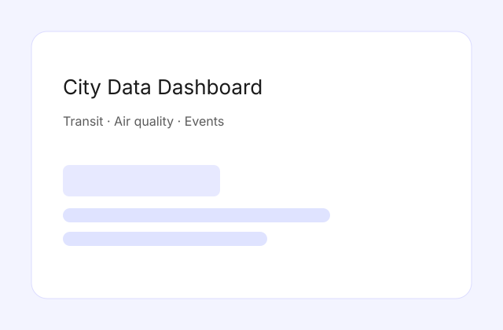

This dashboard combines environmental, transit, and event data into a single responsive view. The goal is to make civic data feel immediate and easy to scan.
I designed a modular data-fetching layer with caching to keep API calls predictable and to enable fast client-side filtering.
View on GitHub